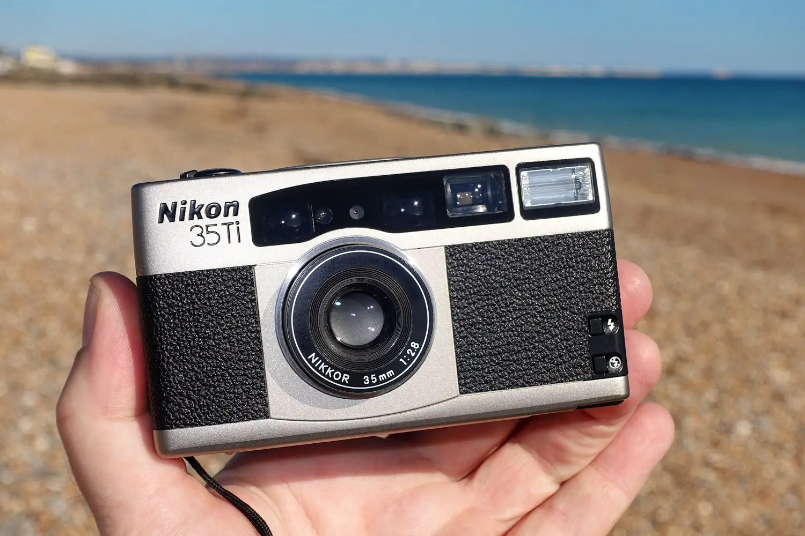

About the Product
A camera is a device that captures images by exposing light-sensitive material to light or other electromagnetic radiation. Unlike traditional cameras that use film, the new camera uses digital technology to capture high-quality pictures in a compact and portable package. With its small size and long battery life, the camera is perfect for capturing life's moments on-the-go.
Key Features
- Compact size
- Long battery life
- High-quality pictures
- Portable
A Brief History
The company behind the camera, Jatt Inc., has been a leader in the photography industry since the late 1800s. With the introduction of the new digital camera, Jatt Inc. is once again revolutionizing the way we capture and share our memories.